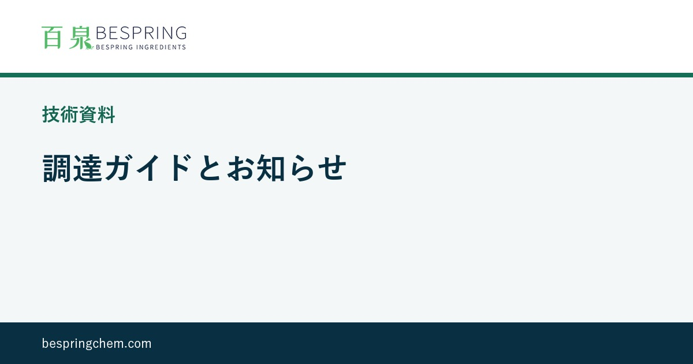
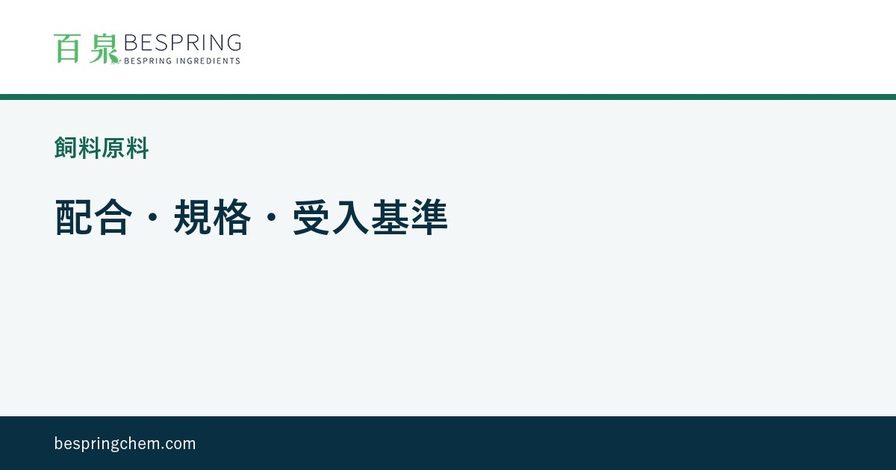

STPPとSHMPの選び方
トリポリリン酸ナトリウムとヘキサメタリン酸ナトリウムを、用途、溶解挙動、試験法で比較します。
バイヤーガイドを読む最新のインサイト
当社のガイドは、化学品のグレード比較、製品要件の整理、海外調達の計画に役立ちます。お見積もりをご希望の際は、必要な仕様と仕向地市場をお知らせください。

トリポリリン酸ナトリウムとヘキサメタリン酸ナトリウムを、用途、溶解挙動、試験法で比較します。
バイヤーガイドを読む
グレード、含量の算出基準、水和状態、粒度と試験方法を照合し、飼料配合に適したリン酸塩を選びます。
バイヤーガイドを読む規格書、SDS、COA、包装表示、仕入書、輸送書類を確認し、輸入時に必要な提出書類を整理します。
バイヤーガイドを読む同じ化学名でも異なる形態、純度、不純物、試験法を用途と書類から比較します。
バイヤーガイドを読む契約相手、製造・包装拠点、原産地、購入規格、ロット書類と変更時の対応を確認します。
バイヤーガイドを読む1 / 5
展覧会のアーカイブ
Bespring Chemicalの国際的な展覧会の記録をブラウズし、日付、場所、ブースおよびポートフォリオの焦点のための各でき事のページを開けて下さい。

Bespring Chemicalは、2025年4月15～17日にモスクワで開催されたGlobal Ingredients Show 2025に、ブースA512で出展しました。
イベント詳細を見る
Bespring Chemicalは、2024年10月9～11日にホーチミン市で開催されたFi Vietnam 2024に、ブースB40で出展しました。
イベント詳細を見る
Bespring Chemicalは、2024年4月23～25日にモスクワで開催されたGlobal Ingredients Show 2024に、ブースD115で出展しました。
イベント詳細を見る
Bespring Chemicalは、2023年11月28～30日にフランクフルトで開催されたFi Europe 2023に、ブース3.1A33で出展しました。
イベント詳細を見る
Bespring Chemicalは、2023年8月10～12日にホーチミン市で開催されたVietfood & Beverage 2023に、ブースA3.127で出展しました。
イベント詳細を見る1 / 5